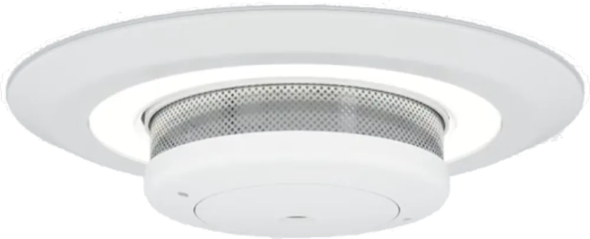
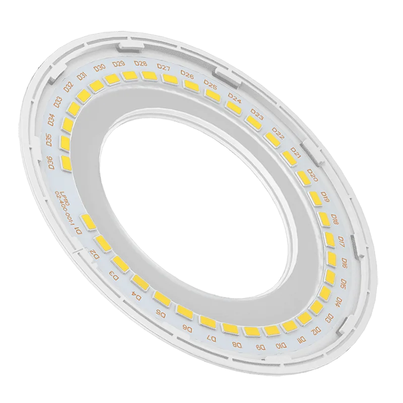

Ceiling lights
Lumi-Plugin
- These aren't normal bulbs, they're LED strips.
- They're dimmer compatible.
- Replacements cost £11.99 as of July 2026 (buy here).
- The smoke alarm battery is a CR2. Lumi-Plugin may send you a replacement if you ask (video guide).
- The smoke alarm beeps every 48 seconds when its battery has reached end of life.



